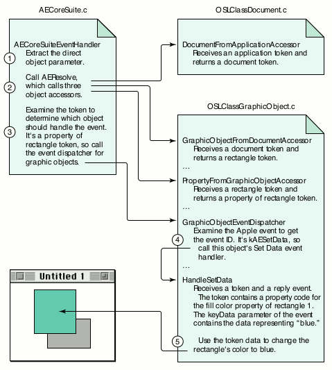
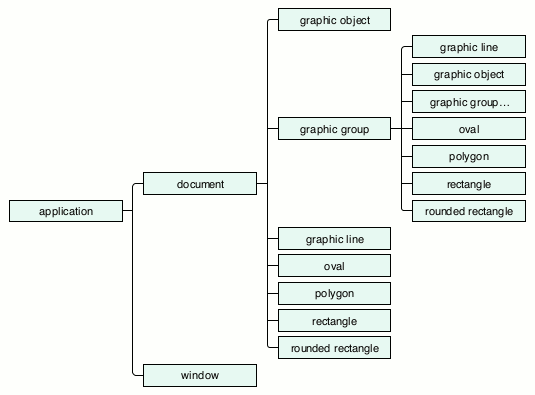

Implementing an Apple event object model makes your application
scriptable -- that is, it enables users to control your application
with AppleScript or some other OSA-compliant language. You can
provide anything from a basic implementation of the object model
that handles only simple scripts to a full implementation that can
handle the most complex scripts. This article will help you do the
latter. It will show you how to write object accessors and
handlers that process lists of objects, alert you to some common
pitfalls, and suggest other features you can add for completeness.
You've decided to give your users an alternate interface for controlling your
application by implementing an Apple event object model. You've read Richard Clark's
article, "Apple Event Objects and You," in develop Issue 10 to get an overview of the
Apple event object model and how to support it. As you've begun to think about your
scripting vocabulary, you've absorbed Cal Simone's article, "Designing a Scripting
Implementation," in developIssue 21 and his According to Script column in Issue 24.
You've checked out the portions of Inside Macintosh: Interapplication Communication
that apply. You've read and understood the Apple Event Registry, which defines the
primary events and objects that you should support in a scriptable application, and
have paid particular attention to the Core, Text, and QuickDraw Graphics suites.
With this basic knowledge, you're ready to read this article. Here you'll learn how to
structure your code to handle more complex user scripts. After a brief review of the
components of an object model implementation, I'll focus on object accessors and show
you how to handle script statements that require your code to act on a list of objects.
Then I'll describe in detail how to deal with three big "gotchas" that are bound to trip
you up unless you know about them. Finally, I'll tell you about some other goodies you
can implement for the sake of completeness. All of this is illustrated in the sample
application Sketch, which demonstrates object model support for a subset of the
QuickDraw Graphics suite. The code for Sketch, which accompanies the article on this
issue's CD and develop's Web site, contains many functions that you can use when you
get ready to code the object model for your own application.
The components of an object model implementation are outlined in the "Apple Event
Objects and You" article and discussed in great detail in Inside Macintosh:
Interapplication Communication. Here I'll briefly review the basic terms and concepts
to refresh your memory and to show how they apply in our sample program.
When a script statement asks your application to perform an action on some object,
such as closing document 1, the object specifier (document 1) must be resolved --
that is, the representation of the specified object must be located in memory. Your
application resolves the object specifier by way of an object accessor function that
converts the object specifier into a token. The token is then passed to an event
dispatcher for that object. I'll describe each of these components before reviewing the
process of resolving object specifiers and dispatching events.
Object accessors are functions you write and install in an accessor table. These
functions are called by the Object Support Library (OSL) function AEResolve when the
Apple Event Manager needs to find some object in your application's data structures.
Object accessors receive a container, an object specifier for an object to locate inside
that container, and a result parameter into which a token is placed. When you install
accessors, you tell the Apple Event Manager that your application knows how to find a
certain kind of object in a certain kind of container. For instance, you know how to find
a rectangle object in a grouped graphic object or a word object in a paragraph object.
(More on containers in a minute.)
A token is an application-defined data structure that is populated in your object
accessors and is passed later to your object's event dispatcher code, where it's used to
find the object that an Apple event will be applied to. The structure and content of a
token are private to the application; neither the Apple Event Manager nor the OSL
attempts to interpret or use the contents of a token. The Sketch sample application uses
a single token structure, shown below, for all of its objects. Note that some fields
aren't used for all object types and that the token doesn't contain the object's data or a
data value; it contains information about how to locate the object later. You can use a
single token structure in your implementation, or you may want to design a unique
token structure for each object you support.
typedef struct CoreTokenRecord {
DescType dispatchClass; // class that will handle an event
DescType objectClass; // actual class of this object
DescType propertyCode; // requested property code,
// or typeNull if not a property token
long documentNumber; // unique ID for the document, or 0
long elementNumber; // unique ID for the element, or 0
WindowPtr window; // used for window objects only
} CoreTokenRecord, *CoreTokenPtr, **CoreTokenHandle;
Event dispatchers are application-defined functions that you call after you've called
AEResolve and your object accessors have returned a token for the target of the Apple
event. You call your event dispatchers and pass the token you created, the original
Apple event, and the reply Apple event you received in your Apple event handler. The
event dispatcher examines the Apple event, extracts the event ID, and passes its
parameters on to a specific event handler for the token object. The token is used to
identify the object or objects that the Apple event should act on.
Apple event handlers are functions you write and install that receive a specific Apple
event and a reply Apple event. Your event handlers extract parameters from the Apple
event, process the event using those parameters, and place the result in the reply
Apple event. A single handler can be installed to handle many events. For example, one
handler can receive all events in the Core suite, except the Create Element event, if
you specify kAECoreSuite for the event class and typeWildCard for the event ID.
Because Create Element passes an insertion location instead of an object specifier in
the direct object parameter, Sketch installs a separate handler,
AECreateElementEventHandler, to handle this event for all Core suite objects.
The Sketch sample code resolves object specifiers and dispatches Core suite Apple
events by using the object-first approach. The object-first flow of control proceeds as
follows:
Figure 1 shows how this approach is applied as Sketch processes the script statement
set fill color of rectangle 1 of document 1 to blue

Figure 1. How Sketch processes set fill color of rectangle 1 of document 1
to blue
Note that Sketch has one file for each type of scriptable object. Figure 1 shows
fragments of three files:
How you implement your object model will depend largely on the nature of your data
and on your containment hierarchy. Your containment hierarchy specifies the objects
you support, how script statements should address those objects, and which objects
are contained by which other objects. Contained objects are called elements of the
container object. Each object also usually contains one or more properties, which
represent that object's characteristics, such as font size or color. While an object can
contain many elements of a particular type, it contains only one of each of its
properties. A script identifies the object to inspect or change by way of an object
reference, which specifies the object's location in the containment hierarchy.
Sketch has the containment hierarchy shown in Figure 2. The application object can
contain both windows and documents. Documents, in turn, contain objects defined in
the QuickDraw Graphics suite, such as rectangles, ovals, graphic lines, and graphic
groups. Graphic groups can contain any object from the QuickDraw Graphics suite,
including other graphic groups.

Figure 2. The Sketch containment hierarchy
The following complete script navigates through Sketch's containment hierarchy from
top to bottom to get a property of an object:
tell application "Sketch"
tell document "Sales Chart"
tell rectangle 1
get fill color
end tell
end tell
end tell
Throughout the rest of this article, I'll usually show script fragments consisting of a
single statement instead of complete scripts.
The desired object can be specified in one of several ways in a script statement, as
you'll see later in the discussion of key forms. Theoretically, for each
container-element combination in your containment hierarchy, you need an object
accessor function that can find the element type in its container type. In reality, you
frequently can get by with a single object accessor function that can handle many
container-element pairs, rather than having to write and install a separate function
for each one.
The Apple Event Registry lists the elements that can be contained within each object it
defines. Recursive definitions occur frequently in the Registry. For example, the word
object in the Text suite can contain characters, words, lines, paragraphs, and text.
While it seems reasonable that a word can contain a character, when would a word
contain a line or a paragraph? Suppose the script asked to do something to words 1
through 200. This is an example of a range specifier, which we'll look at in more
detail later. Your application might resolve this range specifier into a list of 200 word
objects. Because there could be many paragraphs within that range, asking for
paragraph 2 of words 1 through 200 would make sense. It's to support range
specifiers that every text object is required to be an element of every other text
object.
The upshot of this is that to support the word object in the Text suite, you would need
to write object accessors to resolve all these possible containment scenarios:
word-from-character, word-from-word, word-from-line, word-from-paragraph,
word-from-text, and either word-from-document (for a text editor that supports one
large text object per document) or word-from-graphic-text (for a drawing
application that supports many text boxes per document). As mentioned earlier,
though, you frequently can get by with a single object accessor function that can handle
many container-element pairs. Sketch, for example, uses just two object accessors to
support all objects in the QuickDraw Graphics suite:
GraphicObjectFromDocumentAccessor and GraphicObjectFromGroupAccessor, both of
which call GraphicObjectAccessor to do the real work of finding a graphic object.
Script statements can ask for an object or a collection of objects in a variety of ways.
They can ask for a single object by its unique ID, by name, or by its absolute or
relative position in a container. A script can also ask not for an object, but for some
property of an object, such as the fill color of a rectangle or the font of a paragraph. A
script statement can ask for more than one object by using the word every, by
specifying a range between some object and some other object in a container, or by
specifying a test that the objects must satisfy. The method that's used to reference an
object or objects in a script determines the keyForm parameter that an object
accessor function will receive when it comes time to resolve the object specifier.
When an object accessor receives one of the simple key forms and associated key data
types listed in Table 1, it returns a descriptor containing a token that references a
single object in your application. When it receives one of the complex key forms and
associated key data types listed in Table 2, it returns a descriptor containing a list of
tokens, each of which references a single object.
Table 1. Simple key forms
| Key form | Key data type | Key data value |
| formUniqueID | typeLongInteger | A unique number |
| formPropertyID | typeEnumerated | An identifier declared in your |
| 'aete' resource | ||
| formName | typeIntlText | The name of an object, such as a |
| document | ||
| formAbsolutePosition | typeLongInteger | |
| typeAbsoluteOrdinal | A positive | |
| or negative number | ||
| kAEFirst, kAEMiddle, kAELast, | ||
| kAEAny | ||
| formRelativePosition | typeEnumerated | kAENext, kAEPrevious |
Table 2. Complex key forms
| Key form | Key data type | Key data value |
| formAbsolutePosition | typeAbsoluteOrdinal | kAEAll |
| formRange | typeRangeDescriptor | See section "Handling |
| formRange." | ||
| formTest | See section "Handling formTest and formWhose." | |
| formWhose | See section "Handling formTest and formWhose." | |
Note that not all key forms are appropriate for all classes -- a rectangle might not
have a name, for example, and some objects, such as a word or a paragraph, might not
have a unique ID. According to Inside Macintosh: Interapplication Communication, if a
key form isn't supported for an object in one of your containers, you should return
errAEEventNotHandled. But you might want to return a more specific error code, such
as errAEBadKeyForm or errAENoSuchObject.
HANDLING SIMPLE KEY FORMS
Handling the simple key forms is mostly straightforward. Table 3 shows some
examples of script fragments using simple keys and their results. For these examples,
assume the script is looking at a text block that contains the words "Hi there" in
12-point Helvetica type. For the first two examples, formAbsolutePosition is the key
form; for the third example, the key form is formPropertyID, and for the fourth
example it's formRelativePosition.
Table 3. Script fragments using simple keys and their results
| Script fragment | Result type | Example result |
| word 2 | word | "there" |
| character 1 of word 2 | character | "t" |
| size of word 1 | number (font size) | 12 |
| word before word 2 | word | "Hi" |
Although formRelativePosition is a simple key form, there's one aspect of handling it
that might not be obvious. The container parameter that your object accessor receives
in this case is a reference not to a container but to an object inside a container in
relation to another object inside that container. In other words, if a script asks for an
object before or after another object in a container, as in
get name of the window after window "Sales Chart"
your object accessor will receive a keyForm parameter of formRelativePosition and a
keyData parameter that contains a constant, either kAENext or kAEPrevious. Your
accessor must then find the object either before or after the "contained" object. This
means that to handle formRelativePosition, you'll have to install an accessor that gets
an object of one type from another object of the same type.
Although the containment hierarchy for Sketch shows that windows don't contain other
windows, you will need a window-from-window accessor installed to handle
formRelativePosition. If your accessors can find an object in a container, finding an
object either before or after that object should be relatively easy, as long as you
remember to install the accessor. Here's how Sketch installs the accessor for its
window object:
error = AEInstallObjectAccessor(cWindow, cWindow, NewOSLAccessorProc(WindowFromApplicationAccessor), 0L, false);
HANDLING EVERY
If a script asks for every one of a certain kind of object, your accessor will receive a
keyForm parameter of formAbsolutePosition and a keyData parameter with a
descriptor type of typeAbsoluteOrdinal and a value of kAEAll, and you'll return a
descriptor that represents a collection of objects. The Sketch application returns an
AEList of tokens that reference each object. Some examples of script fragments using
every and their results are shown in Table 4. Again, assume the script is looking at a
text block that contains the words "Hi there" in 12-point Helvetica type.
Table 4. Script fragments using every and their results
| Script fragment | Result type | Example result |
| every word | List of words | {"Hi", "there"} |
| character 1 of every word | List of characters | {"H", "t"} |
| every character of every word | List of list of characters | {{"H", "i"}, {"t", "h", |
| "e", "r", "e"}} | ||
| font of character 1 of every word | List of strings | {"Helvetica", |
| "Helvetica"} | ||
| size of every character of every word | List of list of numbers | {{12, 12}, {12, |
| 12, 12, 12, 12}} |
Each every specifies another list level: one every will return a list, two will return
a list of lists, and so on. Consider, for instance, this statement that navigates through
the Text suite hierarchy:
get every character of every word of every paragraph of every document
An application could handle this statement by returning a descriptor containing a
four-level list of character tokens. Alternatively, an application could return a flat
list (a single-level list of objects all concatenated together), but I don't recommend
this practice because it assumes that the information about the deep structure that's
thrown away won't be needed for any subsequent processing in the script, and there's
really no way to know that reliably.
AEResolve and your individual object accessors have no way to know how deep a list
will end up being, but your code that handles the Apple event after the object
resolution has been completed must do the right thing with a descriptor referencing a
single object and with a descriptor that contains arbitrarily deep lists of such objects.
HANDLING FORMRANGE
If the script asks for objects between some object and some other object in a
container, your object accessor for that container will receive a keyForm parameter
of formRange. There are many ways to specify a range of objects in a script:
get the fill color of rectangles 1 through 3 get the location of windows from window "Hello" to window 4 get the bounds of graphic objects from oval 1 to rectangle 3
Note that the beginning and ending objects can be specified with different key forms
and that they might even be two different object types, as in the third example.
Regardless of how they're specified, you need to resolve the two object specifiers and
return a descriptor containing a list of tokens for the objects from the first through
the last object in the range.
Your object accessors are called three times to completely resolve a formRange
statement. On the first call to an object accessor, you receive a key form of formRange
and key data that contains a typeRangeDescriptor record. In Sketch, this information is
passed on to the ProcessFormRange function, shown in Listing 1. ProcessFormRange
begins by coercing the range record into a regular record, which will then contain two
object specifiers. Next, it extracts the first descriptor from the record and calls
AEResolve, which calls your object accessors again to get a token for the first object in
the range. Finally, ProcessFormRange extracts the second descriptor and calls
AEResolve again to get a token for the last object in the range. ProcessFormRange is
called from your object accessor, and when it returns you'll have tokens for the two
boundary objects in the range. Your object accessor then builds a list of all objects in
the range and returns that list in the result token.
______________________________
Listing 1. Resolving the boundary objects for a range request
OSErr ProcessFormRange(AEDesc *keyData, AEDesc *start, AEDesc *stop)
{
OSErr error;
AEDesc ospec = {typeNull, NULL};
AEDesc range = {typeNull, NULL};
// Coerce the range record data into an AERecord.
error = AECoerceDesc(keyData, typeAERecord, &range);
if (error != noErr) goto CleanUp;
// Resolve the object specifier for the first object in the range.
error = AEGetKeyDesc(&range, keyAERangeStart,
typeWildCard, &ospec);
if (error == noErr &&
ospec.descriptorType == typeObjectSpecifier)
error = AEResolve(&ospec, kAEIDoMinimum, start);
if (error != noErr) goto CleanUp;
AEDisposeDesc(&ospec);
// Resolve the object specifier for the last object in the range.
error = AEGetKeyDesc(&range, keyAERangeStop, typeWildCard,
&ospec);
if (error == noErr &&
ospec.descriptorType == typeObjectSpecifier)
error = AEResolve(&ospec, kAEIDoMinimum, stop);
CleanUp:
AEDisposeDesc(&ospec);
AEDisposeDesc(&range);
return error;
}
______________________________
HANDLING FORMTEST AND FORMWHOSE
If the script asks for objects that satisfy some test, such as
get the fill color of every rectangle whose rotation is 45
you'll return a descriptor containing a list of tokens referencing those objects.
Fortunately, once you've added support for list processing, you only need to install two
functions to gain the incredible power of whose statements: an object-counting
function and an object-comparison function. The object-counting function counts the
number of objects of a specified class in a specified container. Let's say that your
document has three rectangles that are rotated to 45 degrees, and another three that
aren't rotated. When the OSL calls your counting function, you return 6, the total
number of rectangles in the document container. Now the OSL knows that it has to call
your object-comparison function six times, once for each rectangle.
The object-comparison function is given two descriptors and a comparison operator
and returns true if the two descriptors satisfy the comparison operator, or false if
they don't. For the example above, one descriptor will be an object specifier, such as
rotation of rectangle 1, and the second descriptor contains the raw data, 45. You need
to resolve the first descriptor, a formPropertyID reference, to get the rotation value
for that object. Then you use the comparison operator to compare the resolved
property value with the raw comparison data. If the comparison is valid, you return
true; otherwise, you return false. When you return true, the OSL adds the token
representing the rectangle under consideration to a list of objects that satisfy the test.
To make sure the OSL handles formTest and formWhose for you in this way, be sure to
specify kAEIDoMinimum as the second parameter to AEResolve.
Because you can have only one counting function and one comparison function installed,
they need to be able to work with all of your container types and all the object types
you support. The good news is that if you've added support for basic object model
scriptability, you've already got most of the functions spread around that do most of
the work you'll need to do in your counting and comparison callbacks. Sketch includes
both an object-counting function and an object-comparison function, plus a variety of
comparison functions for different data types.
Depending on the OSL to handle whose clauses in this way has one drawback -- it can
be inefficient when there are a large number of objects. The OSL will call your
accessors to find each object and then it will apply the comparison to each one. If you
find that this is too slow, you can go the extra mile and handle resolution of whose
clauses yourself. For details, see "Speeding Upwhose Clause Resolution in Your
Scriptable Application" by Greg Anderson indevelop Issue 24.
Handling the key forms and the lists your object accessors can return goes a long way
toward making an object model implementation capable of handling complex user
scripts. But there's more you need to do -- namely, you have to know about the three
big gotchas so that you can avoid getting into trouble with them.
I first encountered the gotchas while I was taking the "Programming Apple Events"
course at Apple Developer University. The instructor, James Sulzen, was showing us
some slides when he boldly exclaimed, "And here is the most important slide in the
course!" It was the slide listing the gotchas I'm about to describe. But I didn't discover
just how correct his pronouncement was until sometime later, when I'd read the
Registry several times over and had started implementing an object model for a
high-end graphics package. Simply stated, the gotchas are these:
I'll explain each of these and describe what you need to do in your code to deal with
them.
GOTCHA #1: THE "ANY PARAMETER" GOTCHA
Any Apple event parameter can be an object specifier.
To help you grasp the implications of this gotcha, let's look first at a script that
results in sending your application a keyData parameter that's not an object specifier:
set stroke size of rectangle 1 of graphic group 2 to 3
In your 'aete' resource, you've included the QuickDraw Graphics suite that defines a
rectangle object and its stroke size property. When a script sends the above statement
to your application, your accessors will be called to find rectangle 1. In this example,
accessors for document-from-application, group-from-document, and
rectangle-from-group will be called. The last accessor, the one that actually finds the
rectangle, returns a token that will allow your event handler to find this specific
rectangle later. Next, since AEResolve has done its work, your Core suite dispatcher
examines the type of object the token refers to and dispatches it to the appropriate
object's event dispatcher.
Your event dispatcher looks at the Apple event ID and determines that it's a Set Data
event, so it calls the object's Set Data event handler, passing in the token returned
from your object accessor, the original event, and the reply event. In the object's
event handler, you examine the token to determine that it references the stroke size
property of a particular rectangle, and you examine the Apple event to extract the
keyData parameter, which contains the value 3. Finally, you update the data structure
that represents that rectangle, setting the stroke size to 3, and probably do something
to generate an update event so that the screen is redrawn to show the rectangle's new
visual appearance.
Now, suppose the user typed a slightly different statement:
set stroke size of rectangle 1 to the stroke size of oval 2
This time the keyData parameter isn't a simple number like 3 but is instead an object
specifier, stroke size of oval 2. There's only one way to convert this to a value to use to
set the stroke size of rectangle 1 -- you have to resolve the keyData parameter. You
first have to resolve the object specifier to acquire a token that references the stroke
size of oval 2, and then, since you need the actual value of that property for the Set
Data event, you must use that token and emulate a Get Data event to extract that value
from oval 2.
How to deal with gotcha #1. Again, gotcha #1 says any parameter to an Apple
event can be an object specifier. Since this is the case, we might as well write a
generic function that extracts parameters from an Apple event and that can handle
parameters that contain raw data as well as parameters that contain object specifiers.
Sketch uses this approach, calling its ExtractKeyDataParameter function from its Set
Data event handlers.
The ExtractKeyDataParameter function, shown in Listing 2, extracts the key data from
the Apple event without changing its form. It then passes that data to the ExtractData
function (Listing 3), which looks at the descriptor type and calls AEResolve if it
determines that the source parameter contains an object specifier. ExtractData can
receive an object specifier, an object token, a property token, or raw data (text,
number, and so on); it converts whatever it receives into raw data and returns that.
Besides being called from ExtractKeyDataParameter, it's also called by the
OSLCompareObjectsCallback function, which is used to resolve whose clauses.
______________________________
Listing 2. Extracting the keyData parameter from an Apple event
OSErr ExtractKeyDataParameter(const AppleEvent *appleEvent,
AEDesc *data)
{
OSErr error = noErr;
AEDesc keyData = {typeNull, NULL};
error = AEGetKeyDesc(appleEvent, keyAEData, typeWildCard,
&keyData);
if (error == noErr)
error = ExtractData(&keyData, data);
AEDisposeDesc(&keyData);
return error;
}
______________________________
Listing 3. Extracting raw data from a descriptor
OSErr ExtractData(const AEDesc *source, AEDesc *data)
{
OSErr error = noErr;
AEDesc temp = {typeNull, NULL};
DescType dispatchClass;
if ((source->descriptorType == typeNull) ||
(source->dataHandle == NULL)) {
error = errAENoSuchObject;
goto CleanUp;
}
// If it's an object specifier, resolve it into a token;
// otherwise just copy it.
if (source->descriptorType == typeObjectSpecifier)
error = AEResolve(source, kAEIDoMinimum, &temp);
else error = AEDuplicateDesc(source, &temp);
if (error != noErr) goto CleanUp;
// Next, determine which object should handle it, if any.
// If it's a property token, get the dispatch class.
// Otherwise, it's either an object token or raw data.
if (temp.descriptorType == typeProperty)
dispatchClass = ExtractDispatchClassFromToken(&temp);
else dispatchClass = temp.descriptorType;
// If it's a property token, get the data it refers to;
// otherwise just duplicate it.
switch (dispatchClass) {
case cApplication:
error = errAEEventNotHandled;
break;
case cDocument:
error = GetDataFromDocumentObject(&temp, NULL, data);
break;
case cWindow:
error = GetDataFromWindowObject(&temp, NULL, data);
break;
case cGraphicObject:
error = GetDataFromGraphicObject(&temp, NULL, data);
break;
default:
// This is raw data or a nonproperty token.
error = AEDuplicateDesc(&temp, data);
break;
}
CleanUp:
AEDisposeDesc(&temp);
return error;
}
______________________________
There are some circumstances where extracting raw data isn't the correct thing to do,
as in
set selection of application "Sketch" to oval 2
In this case, we just want to return the token for oval 2, not some property data as in
the previous example. To handle this case, ExtractData checks to make sure that the
token's propertyCode field doesn't contain typeNull before we dispatch the token to one
of the GetDataFrom functions. If it isn't a property token, we just return the token
itself and not its data.
GOTCHA #2: THE "ANY RESOLUTION" GOTCHA
Any resolution can return either a descriptor containing a token for
a single object or a descriptor containing a list of tokens.
As noted earlier, the presence of every in a script statement, or a range request, or a
whose statement all require that you generate and return a descriptor containing a
list of tokens. Let's look at a script statement and follow the resolution process as it
calls each of our accessors in turn. Here's the statement:
get every character of word 2 of every line of paragraph 2 of document 1
Let's assume document 1 looks like this:
Hello there!¶
This text block contains three lines
and two of them are long but one
is not.¶
In the Core suite, AEResolve works from the top of the containment hierarchy down to
the requested object, so in our example it first calls the document-from-application
accessor, which returns a token identifying the frontmost document. I'll introduce a
notation here, where a letter refers to the object type, and a number refers to an
index, so "D1" means "document 1."
resolve "document 1" => D1
Next, AEResolve asks us to find a paragraph by calling our paragraph-from-document
accessor, which returns a token for paragraph 2:
resolve "paragraph 2 of document 1" => D1P2
Next, AEResolve calls our line-from-paragraph accessor. Because of the every
keyword, we must return a list of tokens:
resolve "every line of paragraph 2 of document 1" =>
{D1P2L1, D1P2L2, D1P2L3}
Next, AEResolve asks for word 2 and calls our word-from-line accessor. In this case,
however, our accessor must be able to find a word in each token in a list of line tokens.
The accessor's result is a list of word tokens. The list depth doesn't change, because the
statement doesn't ask for every word.
resolve "word 2 of every line of paragraph 2 of document 1" =>
{D1P2L1W2, D1P2L2W2, D1P2L3W2}
The final resolution asks for every character of each of those three words. Because this
is our second every in the statement, we know we're going to return a list of lists:
resolve "every character of word 2 of every line of paragraph 2 of
document 1" =>
{{D1P2L1W2C1, D1P2L1W2C2, D1P2L1W2C3, D1P2L1W2C4},
{D1P2L2W2C1, D1P2L2W2C2, D1P2L2W2C3},
{D1P2L3W2C1, D1P2L3W2C2, D1P2L3W2C3}}
or, as it would be displayed as an AppleScript result:
{{"t", "e", "x", "t"}, {"t", "w", "o"}, {"n", "o", "t"}}
A list of tokens can also be accumulated by the OSL in the course of handling awhose
clause. For example, consider the following statement:
resolve "every word of paragraph 2 of document 1 that contains
"e"" =>
{"text", "three", "lines", "them", "are", "one"}
When this statement is resolved, the OSL will call your object accessors for word 1
through word 16 of the token for paragraph 2 of document 1 and pass each word token
to your object-comparison function. Those tokens that match (words that contain the
letter e in this example) are copied into an AEList with AEPutDesc, and the original is
disposed of with AEDisposeDesc. Tokens that don't match are disposed of with your
token disposal callback if you've installed one, or with AEDisposeDesc otherwise.
There's a corollary to gotcha #2: Any token list can be or can contain an empty list or
lists. Given the statement
get every character of word 3 of every line of paragraph 2 of document 1
we must deal with the fact that line 3 (the last line) of paragraph 2 contains only two
words. What then should we do with "word 3 of line 3"? If this were a standalone
statement, we'd feel justified in returning an errAEIllegalIndex error to let the user
know that the requested word doesn't exist. However, since we're returning lists in the
more complex statement, we might want to return an empty list as part of our result
instead. For example:
{{"b", "l", "o", "c", "k"}, {"o", "f"}, {}}
Another example, again from the Text suite, involves words from paragraphs. Suppose
paragraph 2 is empty, as in the following block of text:
Hello there!¶
¶
How are you?¶
What will you do with "get every word of every paragraph" in this case? If you decide
to support empty lists or empty sublists, all of your handlers will need to be able to
deal not only with a single token and arbitrarily deep lists of tokens, but also with an
empty list.
How to deal with gotcha #2. Designing your object accessors and your event
handlers to be list savvy enables your code to fully respond to script statements that
require you to return lists of objects or to apply Apple events to lists of objects.
To handle lists, an object accessor must be able to return a descriptor containing a
token that references a single object or a descriptor that contains a list of tokens. For
example, a property-from-object accessor must be able to receive a list of object
tokens and return a list of property tokens for those objects. For each object you
support, you need one of these property-from-object accessors. In Sketch, these
basically duplicate the token for the object and then stuff the requested property ID
into the token's propertyCode data field.
An object's event handler must also be able to receive a descriptor that contains a
single token or a descriptor that contains a list of tokens. It must then apply the event
to the object referenced by each token. In addition, the event handler must apply the
event to each object in a manner that addresses gotcha #3, discussed later.
If you've installed a token disposal callback function, it too must be able to handle an
AEList of tokens.
The Sketch sample handles this gotcha by implementing recursion in both its object
accessors and its event handlers. The basic structure of an accessor then consists of
three functions. For example, for the QuickDraw Graphics suite, the
property-from-object accessor uses these three functions, as shown in Listing 4:
______________________________
Listing 4. Functions used by our property-from-object accessor
pascal OSErr PropertyFromGraphicObjectAccessor(
DescType desiredClass,
const AEDesc* containerToken, DescType containerClass,
DescType keyForm, const AEDesc* keyData, AEDesc* resultToken,
long refcon)
{
OSErr error;
if (containerToken->descriptorType != typeAEList)
error = PropertyFromObjectAccessor(desiredClass,
containerToken, containerClass, keyForm, keyData,
resultToken, refcon);
else {
error = AECreateList(NULL, 0L, false, resultToken);
if (error == noErr)
error = PropertyFromListAccessor(desiredClass,
containerToken, containerClass, keyForm, keyData,
resultToken, refcon);
}
return error;
}
static OSErr PropertyFromListAccessor(DescType desiredClass,
const AEDesc* containerToken, DescType containerClass,
DescType keyForm, const AEDesc* keyData, AEDesc* resultToken,
long refcon)
{
OSErr error = noErr;
long index, numItems;
DescType keyword;
AEDesc srcItem = {typeNull, NULL);
AEDesc dstItem = {typeNull, NULL};
error = AECountItems((AEDescList*)containerToken, &numItems);
if (error != noErr) goto CleanUp;
for (index = 1; index <= numItems; index++) {
error = AEGetNthDesc(containerToken, index, typeWildCard,
&keyword, &srcItem);
if (error != noErr) goto CleanUp;
if (srcItem.descriptorType != typeAEList) {
error = PropertyFromObjectAccessor(desiredClass, &srcItem,
containerClass, keyForm, keyData, &dstItem, refcon);
}
else {
error = AECreateList(NULL, 0L, false, &dstItem);
if (error == noErr)
error = PropertyFromListAccessor(desiredClass, &srcItem,
containerClass, keyForm, keyData, &dstItem, refcon);
}
if (error != noErr) goto CleanUp;
error = AEPutDesc(resultToken, index, &dstItem);
if (error != noErr) goto CleanUp;
AEDisposeDesc(&srcItem);
AEDisposeDesc(&dstItem);
}
CleanUp:
AEDisposeDesc(&srcItem);
AEDisposeDesc(&dstItem);
return error;
}
static OSErr PropertyFromObjectAccessor(DescType desiredType,
const AEDesc* containerToken, DescType containerClass,
DescType keyForm, const AEDesc* keyData, AEDesc* resultToken,
long refcon)
{
OSErr error = noErr;
DescType requestedProperty = **(DescType**)(keyData->dataHandle);
if (CanGetProperty(containerClass, requestedProperty)
|| CanSetProperty(containerClass, requestedProperty)) {
error = AEDuplicateDesc(containerToken, resultToken);
if (error == noErr) {
resultToken->descriptorType = desiredType;
(**(CoreTokenHandle)(resultToken->dataHandle)).propertyCode
= requestedProperty;
(**(CoreTokenHandle)(resultToken->dataHandle)).objectClass
= containerClass;
}
}
else error = errAEEventNotHandled;
return error;
}
______________________________
The event handlers use this same three-tiered mechanism to apply events to
descriptors that contain either a single token or a list of tokens. For example, the Get
Data event will eventually receive the property token returned by the
property-from-object accessor above and deal with it as shown in Listing 5.
______________________________
Listing 5. How a Get Data event handles a property token
static OSErr HandleGetData(AEDesc *token,
const AppleEvent *appleEvent,
AppleEvent *reply, long refcon)
{
OSErr error = noErr;
AEDesc data = {typeNull, NULL};
AEDesc desiredTypes = {typeNull, NULL};
AEGetParamDesc(appleEvent, keyAERequestedType, typeAEList,
&desiredTypes);
// "as" is an optional parameter; don't check for error.
error = GetDataFromGraphicObject(token, &desiredTypes, &data);
if (error == noErr && reply != NULL)
error = AEPutKeyDesc(reply, keyDirectObject, &data);
AEDisposeDesc(&data);
AEDisposeDesc(&desiredTypes);
return error;
}
OSErr GetDataFromGraphicObject(AEDesc *tokenOrTokenList,
AEDesc *desiredTypes, AEDesc *data)
{
OSErr error = noErr;
if (tokenOrTokenList->descriptorType != typeAEList)
error = GetDataFromObject(tokenOrTokenList, desiredTypes,
data);
else {
error = AECreateList(NULL, 0L, false, data);
if (error == noErr)
error = GetDataFromList(tokenOrTokenList, desiredTypes,
data);
}
return error;
}
______________________________
Again, the event handler passes the first parameter on to GetDataFromGraphicObject,
which calls GetDataFromList if the parameter contains a list of tokens, or
GetDataFromObject if it contains a token for a single object. Both the object accessor
and the event handler use the same three-tiered mechanism to deal with either lists or
single tokens. Most of the work is done, in both cases, in the third tier, and if you've
already implemented simple object model scriptability, you've already written most of
the code for the third tier. To support lists, you just have to add the switching code for
the first and second tier, which is almost identical for all object accessors and all
event handlers. Using this mechanism, fully supporting lists of any depth is nearly
trivial.
Flattening lists. Sometimes, after your object resolution code has built an
arbitrarily deep list of lists to satisfy the tail end of a script statement, the final
resolution might require you to flatten it back into a single-level list. Sketch includes
the FlattenAEList function to perform this duty:
OSErr FlattenAEList(AEDescList *deepList, AEDescList *flatList);
Here's an example of when you might use it, again from the Text suite:
get text of every character of every word of every paragraph ~ of every document
Since the Text class isn't required to handle either formRange or the every construct,
you can return a string that spans from the first character in the list to the last
character in the list. A function to flatten a typeAEList token from an arbitrary depth
to a single list is useful for this purpose, and for use in your Apple event handlers,
such as the handlers for Count and Delete. For example, the statement
count every character of every word of every line of every paragraph
is allowed, and your accessors will return a four-deep list of characters. The Count
event handler doesn't care about the structure of the list, only about the number of
objects in its sublists, so rather than deal with recursion to step through the list
structure you can just flatten the list and then call AECountItems to get the number of
elements. This example is somewhat contrived, and although this script fragment
would be processed correctly, such processing might be very slow for a large number
of objects. This is a side effect of a strict object-first implementation. For some
events, such as Count, you may want to write custom counting code that short-circuits
your standard object resolution and dispatching mechanism.
GOTCHA #3: THE "PRESERVE A TOKEN'S MEANING" GOTCHA
The meaning of a token's contents must be preserved during the
execution of an Apple event that uses that token.
You're most likely to come up against this gremlin when one of your handlers receives
a list of tokens and some action needs to be performed on the objects referenced by the
tokens in the list. Consider, for example, the following statement:
delete character 2 of every word
Let's say all of your text tokens are implemented by storing a beginning offset and a
length, where the offset is measured from the beginning of a text block. Resolving the
above statement will return a list of tokens, with offsets for character 2 of each word
in the text block. Next, your handler iterates through the list of objects referenced by
the tokens and deletes the character referenced in each object. The first deletion works
just fine; you use the offset contained in the first token and delete character 2 of word
1. This causes every following character to move one position to the left to fill the spot
vacated by the deleted character. Uh oh! Now the offsets for the remainder of your
objects are all off by 1! The next deletion will use the now incorrect offsets, and
character 3 of word 2 will be deleted. The next call will delete character 4 of word 3,
and so on. This implementation has violated gotcha #3 -- you received a single Delete
event, but that single event operates on multiple objects, and although your object
accessors computed the object tokens correctly at the time they were called, your
handler causes the meaning of the tokens to be inaccurate each time it processes
another object.
How to deal with gotcha #3. Here are several ways to solve the problem resulting
from processing the script statement above:
These methods all produce the correct results for the script statement above, but they
might produce incorrect results for other valid statements. For instance, suppose your
user built the word list herself and then reversed the list and sent it to your Delete
handler. With the last solution above, you cleverly work from the end of the list to the
beginning, but since the user has already reversed the list, you're really back to
deleting from the beginning of the text block toward its end, and you experience the
very problem you were trying to avoid!
If you're implementing the Text suite, pay particular attention to gotcha #3. Test your
implementation with many different scripting constructs, and have people who write
scripts very differently from you test it also. If necessary, you may need to first
manipulate the order of the tokens in the list you receive to make sure you can
preserve the meaning of those tokens until the event has been applied to each one of
them.
Now you know how to handle lists and some ways to avoid the big gotchas. But there are
still a few more things you can do to make your object model implementation more
complete. Specifically, you can implement a "properties" property, implement a
property-from-property accessor, provide your own coercions, and return
meaningful error codes.
IMPLEMENTING A "PROPERTIES" PROPERTY
You should implement a "properties" property and return a record containing all the
properties for an object. This provides a real boon for the scripter, who can then set
or get several properties with a single statement, and it speeds up execution as well
since it avoids the need to send many events to get or set properties one at a time.
For instance, if the script says
get the properties of rectangle 1
the Get Data event should return a record containing the name and value of each
property for that object:
{bounds: {0, 0, 100, 200}, fill color: red, stroke size: 10, ...}
The script could also say something like
set properties of rectangle 1 ~
to {stroke size: 3, fill color: blue, location: {20, 40}}
In Sketch, the Set Data event handler looks at the property token it receives. If the
token references a single property, it packages it into a record containing that
property and passes the record on to the SetProperties function. If, instead, it receives
a record, it just passes that record on to SetProperties. The SetProperties function
always receives a record; it examines the record for each property of the object and
then applies the value of each property it finds in the record to the object.
IMPLEMENTING A PROPERTY-FROM-PROPERTY ACCESSOR
If you implement the "properties" property, you should also implement a
property-from-property accessor. If you don't, you won't be able to get a single
property out of the property record you've already built. The first statement below
will work, but the second one will generate an error:
get fill color of rectangle 1 get fill color of properties of rectangle 1 -- won't work
To get around this, the script writer will need to first assign the results to a variable
and then depend on AppleScript to extract the property out of that variable:
set myProps to properties of rectangle 1 get fill color of myProps
But since one of our goals should be to make scripting intuitive and not force the script
author into particular programming constructs when not absolutely necessary, both
methods of asking for the property should be handled in your code.
Another reason you may need a property-from-property accessor arises when, in the
process of defining your object containment hierarchy, you define two classes, make
one class an element of the other class, and then realize that the container can contain
one and only one instance of that element. For example, imagine a very limited drawing
program that allows many graphic objects but only one text block, an instance of the
QuickDraw Graphics graphic text class. If you stick with a straight containment
metaphor, the script author will need to use a statement like
graphic text 1 of document "Graphic Chart"
to reference the one and only text block. But why should the scripter have to specify
the index of 1 when there can be only one per document? This also invites the scripter
to ask for graphic text 2, for which you would need to return an errAENoSuchObject
error.
One way to handle this case is to implement the singleton object as a property of an
object rather than a contained class. In your 'aete' resource, define a property (say
"label" for the above example) of type graphic text, which is a class defined elsewhere
in your 'aete' resource. Now, the script statement
get the label of document "Graphic Chart"
doesn't need to specify an index, since "label" is a property. What will that statement
return? You decide. You might just return the contents of the graphic text as a string.
But since the "label" property also references a class, you could return the properties
of the text object as a record, such as:
{contents: "Financial Results", font: "Times", size: 12, ...}
By implementing a property-from-property accessor, you can also properly resolve
a statement like this:
get font of label of document "Graphic Chart"
There's an ongoing debate in the developer community about the best way to design for
this single-element situation. Some developers believe that the design discussed above
leads to intuitive script statements that make it easier for users to script your
application. Others contend that elements and properties serve very different
purposes, and that intermixing them in this way both corrupts the object design and
confuses the beginning script writer. You'll have to decide for yourself how you want
to handle this in your application; there may not be one best design. In any case, if you
find yourself in this situation, take the advice Cal Simone gives in his According to
Script columns: write down script statements as part of your design and make sure
that they seem natural and intuitive before you write your code.
PROVIDING APPLICATION-SPECIFIC COERCIONS
Provide your own coercions. There are several places where these come in handy.
First, the Get Data event can take an optional parameter, keyAERequestedType, a list of
types that the user would like for the returned data. For instance, a fill color might be
represented as one of the following:
Thus, a scripter might ask for
fill color of rectangle 1 as constant fill color of rectangle 1 as string fill color of rectangle 1 as RGB color
The Registry defines the type of the as parameter as typeAEList, indicating that the
first item in the list is the user's preferred data type, the second is the user's next
most preferred type, and so on. However, I haven't been able to persuade AppleScript
to accept a list for this parameter. It seems as thoughget fill color of rectangle 1
as string (or RGB color or constant) should work, but it won't compile.
Note that there's a bug in AppleScript 1.1 that generates an error when you implement
both lists and the kAERequestedType parameter. The following statement will expose
the error:
get fill color of every rectangle as string
The every statement causes you to generate a list of property tokens, which is then
passed to your graphic object's Get Data event handler. There, you examine each token,
get the fill color from its rectangle, and convert it to a string (presumably the name of
the color), as specified in the as string part of the statement. Since you received a
list of tokens, you return a list of strings, as you should. You've done the right thing,
but AppleScript isn't satisfied! It doesn't realize that you've already handled the as
string coercion, so it tries to coerce the list of strings you returned into a string and
it reports a coercion error. There's really nothing you can do in your application to
work around this bug; you'll have to wait for it to be fixed in a future version of
AppleScript. There is a way that scripts can handle the error, however:
tell document 1 of application "Sketch"
try
set colorNames to fill color of every rectangle as string
on error number -1700 from offendingVariable
set colorNames to offendingVariable
end try
end tell
RETURNING USEFUL ERROR CODES
One last suggestion: Return a meaningful error code and error message if you don't or
can't handle an event, an object, or a data type. Table 5 presents a list of some of the
most common return codes, when to use them, and the error message that AppleScript
generates when one of these errors occurs.
List 5. Common error codes and examples of when you might return them
errAEEventNotHandled (-1708)
errAECoercionFail (-1700)
errAENoSuchObject (-1728)
errAENotASingleObject (-10014)
errAENotAnElement (-10008)
errAENotModifiable (-10003)
errAEWriteDenied (-10006)
errAECantHandleClass (-10010)
errAEIllegalIndex (-1719)
errAEImpossibleRange (-1720)
errAEWrongDataType (-1703)
errAETypeError (-10001)
errAEBadKeyForm (-10002)
errAECantSupplyType (-10009)
Some error codes have a very generic error message as a default, but you can supply
additional parameters in the reply event so that the error message will be more
specific. For example, an errAECoercionFail message usually says, "Can't make some
data into the expected type," but if you add kOSAErrorOffendingObject and
kOSAErrorExpectedType parameters to the reply event, you'll get a much more
informative message, such as "Can't make fill color of rectangle 1 into a string." These
parameters can also be added to errAEWrongDataType and errAETypeError replies.
For more detail on giving better error messages using this technique, see Developer
Notes in the AppleScript Software Development Toolkit. You may want to define
additional error codes for your application, and if so you should be sure to also set the
error text in the reply event. Take a look at the PutReplyErrorNumber and
PutReplyErrorMessage functions in the Sketch source code to see how to do this.
This article has described some things you can do to implement an Apple event object
model in your application so that it can handle complex scripts. Take a close look at the
code for the Sketch application to see how it uses the object-first method to handle
events and scriptable objects. Carefully examine the dictionaries of several
applications that are fully scriptable, such as QuarkXPress, the Scriptable Text
Editor, or PhotoFlash. Pay attention to how their 'aete' resources are constructed, and
read the develop columns by Cal Simone ("According to Script") to gain further insight
into how to organize both your 'aete' resource and your object model.
Then give your implementation a thorough workout to see if you can spot any
problems. Write AppleScript test cases to exercise the most complex AppleScript
scripts that you want to support. Use the key forms that return lists, and mix them
unmercifully in your test scripts. Exercise every gotcha. If your application stands up
to the test, shout "Ship it!"
RECOMMENDED READING
RON REUTER (rlreute@uswest.com) is a software developer for USWEST Media
Group, "a leading provider of Yellow Pages and interactive multimedia information
services" or, as it used to be known, the phone company. He's spent the last two years
as technical lead on a team that's developing a graphics package to be used across a
fourteen-state region to build ads for USWEST Yellow Page directories. Programming
is Ron's sixth career; he's also been a offset press operator, a furniture maker, a
luthier, a traveling jewelry salesman, and a Zen student -- but he'd rather be dancing
beneath the diamond sky with one hand waving free.*
Thanks to our technical reviewers Greg Anderson, Andy Bachorski, Greg Friedman,
C. K. Haun, and Jon Pugh for reviewing this article.*